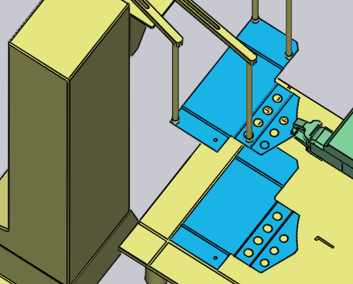

Odoberanie zo zásobníka dielcov
Manipulácia s malými dielcami je pomocou mechanického chápadla, v TecZone Bend známeho aj ako čeľusťové chápadlo. Ak je dielec menší ako približne formát A4, TecZone Bend automaticky navrhne používanie čeľusťového chápadla. Toto chápadlo dokáže uchopovať len dielce zo stanice zásobníka dielcov (známa aj ako zásobník prístrihov). Nasledujúce parametre majú vplyv na tento proces uchopovania dielcov:
-
Poloha a orientácia zásobníka dielcov v kabíne stroja.
-
Orientácia dielca na zásobníku dielcov.
-
Poloha a orientácia kliešťového chápadla na dielci.
Nižšie sú zobrazené okná používané na úpravu všetkých týchto nastavení - všetky sú prepojené navigačnými odkazmi nahor/nadol, ktoré vedú k ďalším oknám v logickej postupnosti:

Ako je zobrazené na obrázku vyššie, k týmto oknám je ľahký prístup aj jednoduchým kliknutím na rôzne objekty v simulácii:
-
Kliknite na zásobník dielcov, aby ste otvorili okno Dispenser (Zásobník dielcov).
-
Pre úpravu orientácie dielca na zásobníku dielcov kliknite na prístrih ležiaci na zásobníku (najprv nastavte aktuálny krok na Pickup (Uchopiť) kliknutím na stĺpec P v navigátore).
-
Pre úpravu polohy držania chápadla na dielci kliknite na chápadlo.
Okno zásobníka dielcov
Kliknite na zásobník dielcov, aby ste otvorili okno Dispenser (Zásobník dielcov). TecZone Bend umiestni dielec do zarovnávacieho rohu zásobníka dielcov a umiestní ramená prísavkového chápadla do rohov dielca. Pomocou tohoto okna je možné upravovať nastavenie ramien a umiestnenie zásobníka dielcov.

-
Použite nastavenie Poloha (Poloha), Uhol (Uhol) a Zdvihnúť (Zdvih) na nastavenie polohy a orientácie zásobníka dielcov, aby ste ich zosúladili s aktuálnou polohou v kabíne.
Nastavenie prisávania
Nastavenia v okne Suction (Prisávanie) sa používajú na nastavenie prísavkových ramien. Tieto nastavenia sú len orientačné, nie sú kritické, pretože sa neprenášajú do stroja v NC programe. Operátor na stroji bude musieť nastaviť ramená ručne (napríklad podľa nastavovacieho plánu, ktorý je súčasťou NC programu).
-
Zvoľte Rameno (Rameno) a upravte nastavenia Uhol (Uhol) a Dĺžka (Dĺžka) ak chcete otočiť alebo predĺžiť rameno tak, aby sa prísavky nachádzali na dielci.
-
Použite nastavenie Typ (Typ) pre zmenu prísaviek namontovaných na podávacej jednotke.
| Keďže nastavenie uhla a dĺžky ramien nie je súčasťou NC programu generovaného vo TecZone Bend-e, v skutočnosti sa nekontroluje, či sa ramená navzájom nekrižujú alebo nepretínajú. |
Okno uchopovania
Okno Pickup (Uchopiť) sa používa na nastavenie orientácie dielca na zásobníku dielcov. Pri otáčaní alebo preklápaní dielca si TecZone Bend zvolí vhodnú rovinu, v ktorej bude dielec uchopený (pretože chápadlo môže prísť vždy len z jedného smeru). Toto okno je možné zobraziť kliknutím na prístrih ležiaci na zásobníku.

-
Tlačidlo Manipulovať s dielom (Otočiť dielec) sa používa na otočenie dielca o 90 stupňov Na obrázku vyššie nie je dielec v ideálnej orientácii pre nastavenie polohy voči rohu zásobníka. Tu je lepší výsledok, po niekoľkých krokoch otočenia:

-
Ak sú prístrihy na zásobníku preklopené naopak, je možné použiť tlačidlo Otočiť dielec (Preklopiť dielec) na otočenie dielca tak, aby bol správne:

Zarovnať roh
Niekedy tieto otočenia o 90° nemusia byť postačujúce. Predpokladajme, že ste chceli zarovnať požadovaný roh (znázornené na obrázku nižšie) s referenciou Z na zásobníku:

Kliknite na Zarovnať hranu (Zarovnať roh) a v menu ktoré sa otvorí zvoľte Zarovnať v smere Z (Zarovnať so Z). Potom kliknite na dielec v blízkosti požadovaného rohu. Tento roh sa teraz zarovná s referenciou zásobníka. Výsledok je zobrazený nižšie below[1], po niekoľkých úpravách polohy a orientácie chápadla, aby lepšie vyhovovali tomuto novému zarovnaniu):

Okno chápadla
Okno Gripper (Chápadlo) sa používa na nastavenie polohy chápadla na dielci, na prepínanie na iné chápadlo a na nastavovanie osi otáčania a posúvania chápadla keď odoberá dielec.

-
Otvorte zoznam Názov (Názov) ak chcete vybrať nové chápadlo zo zoznamu kliešťových chápadiel dostupných pre tento stroj. Pri prechádzaní názvami v tomto zozname sa zobrazí miniatúrne zobrazenie chápadla:

-
Použite nastavenie Poloha (Poloha) a Uhol (Uhol) na nastavenie polohy a orientácie chápadla relatívne voči stredu plochy uchopenia. Tento stred je označený dvoma kružnicami, pozri obrázok vyššie. Tu je to isté chápadlo ktoré je zobrazené vyššie po tom, čo sme nastavili polohu a uhol:

-
Tlačidlá Obrátiť čeľuste (Otočiť čeľusť) a Presunutie (Posunúť chápadlo) sa používajú na otočenie čeľuste chápadla a na posunutie chápadla. Tu sú výsledky zmien po aplikovaní týchto nastavení:

-
Tlačidlo Použiť prísavkové chápadlo (Použiť prísavkové chápadlo) prepne dielec na používanie prísavkového chápadla. Týmto sa v podstate prepočíta celý dielec. Zásobník dielcov sa už nepoužíva, namiesto toho je dielec odoberaný z palety. Prepočíta sa všetko - postupnosť ohýbania, kroky prechytávania a vzor ukladania dielcov tak, aby boli vhodnejšie pre prísavkové chápadlo.
Zmena plochy uchopovania
Príkaz Zvoliť uchopovaciu plochu (Nastaviť plochu uchopenia) sa používa na uchopenie dielca na inej ploche. Kliknite na toto tlačidlo a následne presuňte na ploche, kam chcete umiestniť chápadlo. Po tomto nastavení sa na tejto ploche objaví krížik ktorý označuje, že je zvolená:

Kliknutím na túto plochu sa do tejto plochy presunie chápadlo, ako je to vidno na obrázku nižšie. Takéto zmeny na ploche uchopovania si zvyčajne vyžadujú aj určité zmeny v postupnosti ohýbania, zmeny v krokoch uchopenia atď.